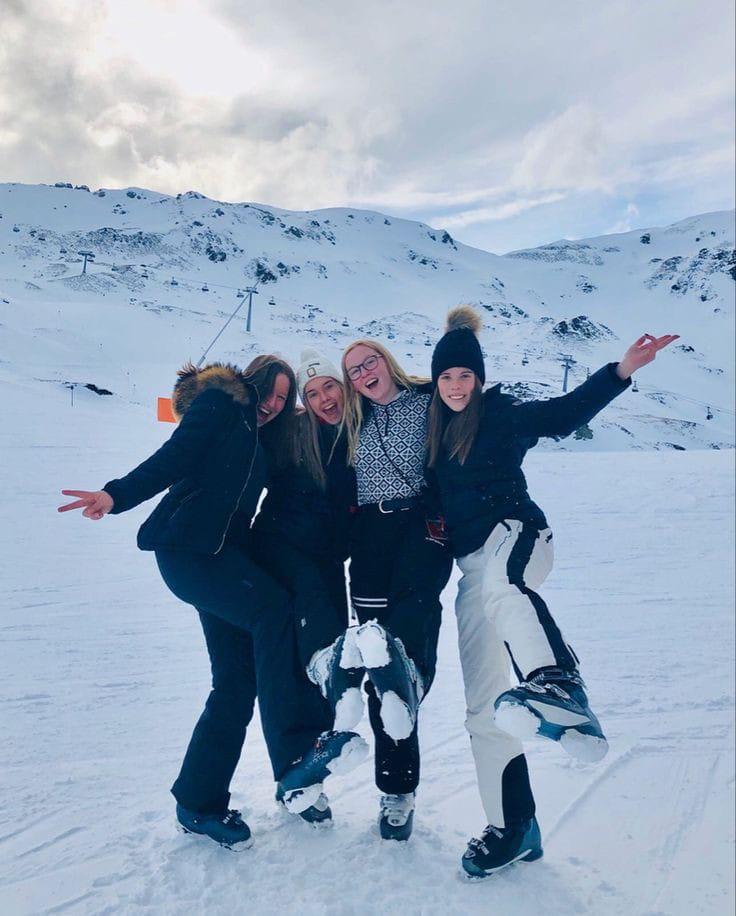

Excursiones guiadas
Descubre la belleza local con nuestras excursiones guiadas a lugares de interés, sitios históricos y rincones naturales. Explora los secretos de nuestra región acompañado por expertos locales.
Deportes invernales
Aprovecha al máximo el invierno con nuestras emocionantes actividades, incluyendo esquí, snowboard y raquetas de nieve. Descubre la emoción de deslizarte por las laderas nevadas y crea recuerdos inolvidables en la nieve.

Senderismo y trekking
Sumérgete en la naturaleza con nuestras rutas de senderismo cercanas, diseñadas para todos los niveles de habilidad. Disfruta de paisajes impresionantes y respira aire fresco mientras te aventuras en nuestras rutas escénicas.